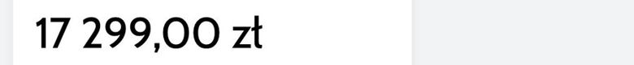
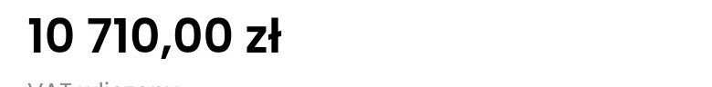
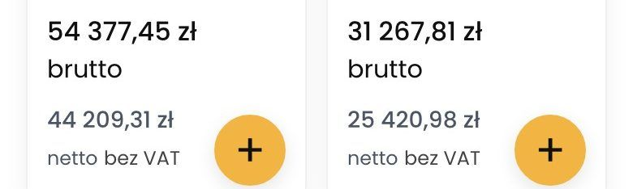
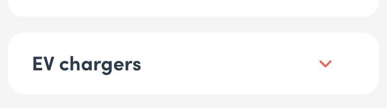
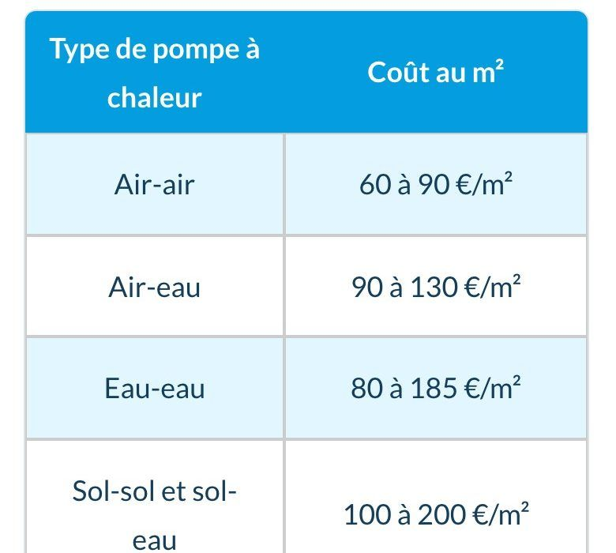
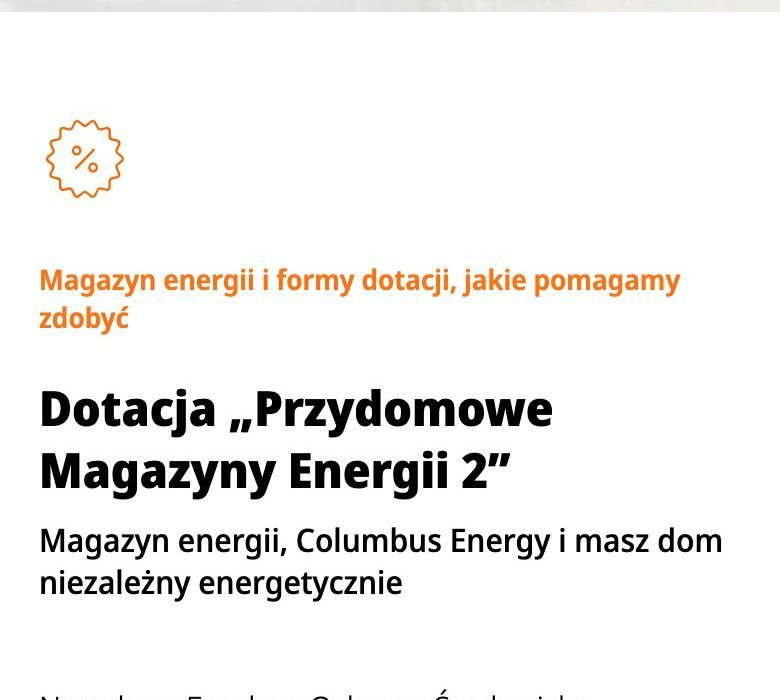
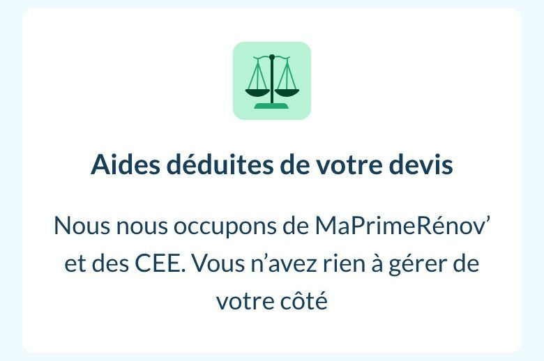
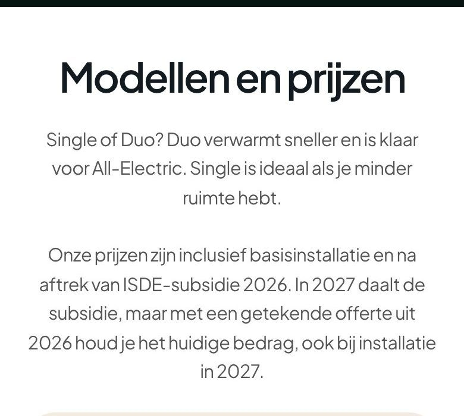
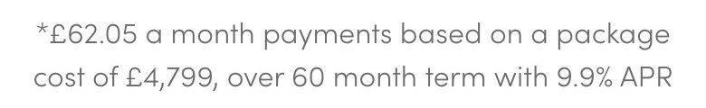

Jedna zasada pokazywania ceny dla kafla, karty produktu, koszyka, kalkulatora i reklamy. Podstawa: 65 wycinków cen z 12 sklepów z benchmarku z 28.10 i ustawa o informowaniu o cenach.
Wniosek. Pierwsza liczba to zawsze cena: kwota do zapłaty z VAT. Druga to komplet z montażem i sterownikiem, też jako kwota do zapłaty. Dotacja PME 2 to osobna kwota zwrotu po montażu, nie odejmowana od ceny. Cena po zwrocie dotacji pojawia się tylko w rozpisce ceny i w reklamie, zawsze z dopiskiem.
Co mówi prawo
Cena to kwota do zapłaty.Ustawa o informowaniu o cenach towarów i usług (art. 3 ust. 1 pkt 1): cena to wartość, którą kupujący jest obowiązany zapłacić przedsiębiorcy.
Jednoznacznie i do porównania.Art. 4 ust. 1: cenę uwidacznia się w sposób jednoznaczny, niebudzący wątpliwości i umożliwiający porównanie cen.
Obniżka z najniższą ceną z 30 dni.Art. 4 ust. 2 (Omnibus): przy obniżce podaje się najniższą cenę z 30 dni przed obniżką.
Dotacja nie jest obniżką ceny.W PME 2 płacisz całość, a dotacja wraca po montażu i ocenie wniosku. Cena po dotacji jako główna liczba sugerowałaby kwotę, której klient nie zapłaci przy zakupie. UOKiK działał już przeciw sprzedawcom OZE za wprowadzające w błąd informacje o dotacjach.
Do potwierdzenia u prawnika.Brzmienie dopisku przy cenie po zwrocie dotacji w reklamie (punkt na liście pytań do prawnika).
Jak to robi rynek
Wycinki z benchmarku 28.10 (telefon). Przy każdym: co z tego bierzemy.
Cena z VAT jako pierwsza, największa liczba
Polskie sklepy z energetyką pokazują jedną dużą cenę brutto i dopisek o VAT; netto, jeśli w ogóle, drobno pod spodem.

Sofar sklepCena brutto największą czcionką na ekranie karty; netto szarym wierszem pod spodem.

SolvoltePogrubiona cena i linia „VAT wliczony” pod nią.

SoltechNa kaflu „54 377,45 zł brutto”, pod spodem szare netto.
Cena z montażem jako osobna, nazwana kwota
Tam, gdzie montaż jest częścią oferty, cenę łączną podaje się wprost i z nazwą, co obejmuje.

Boxt (UK)„installed … from £4,799”: kwota pakietu z montażem w jednym zdaniu z terminem montażu.

Hello Watt (FR)Tabela „cena z montażem” dla typowych domów: widełki łącznej ceny, nie sama cena sprzętu.
Dotacja osobno, jako kwota wsparcia, nie odjęta od ceny
Przy dotacji wypłacanej po zakupie najlepsi pokazują jej kwotę obok ceny i mówią, kto ją załatwia.
Boxt (UK)„Government grant of £7,500 available” osobną linią pod przyciskiem, cena zostaje ceną.Boxt (UK)Karta programu z kwotą i linkiem do zasad.

Columbus EnergySekcja „Magazyn energii i formy dotacji”: program osobno od ceny.
Cena po odliczeniu dotacji: tylko tam, gdzie dotację odlicza się od faktury
We Francji i w Holandii dotację odlicza się od wyceny, więc cena po dotacji to faktycznie kwota do zapłaty. W PME 2 zwrot przychodzi po montażu, więc u nas tego nie robimy.

Hello Watt (FR)„Aides déduites de votre devis”: dotacje odjęte od wyceny, kupujący płaci mniej od razu.

Quatt (NL)Ceny modeli z instalacją i po odliczeniu dotacji ISDE, z jawnym dopiskiem, co zawierają.
Rata przy cenie, z przykładem i operatorem
Rata stoi w linii ceny albo tuż pod nią; przykład reprezentatywny drobnym drukiem.
Solvolte„Rata już od: 283,82 zł” pod ceną.

Boxt (UK)Przykład reprezentatywny: rata, koszt pakietu, okres i oprocentowanie jednym zdaniem.
Najniższa cena z 30 dni przy obniżce
Obowiązek przy każdej obniżce; najlepiej linia pod ceną z datą.
Solvolte„Najniższa cena 10 710,00 zł od 26.10.2026 dla tego produktu”.
Nasza zasada: sześć poziomów, zawsze w tej kolejności
1. Cenakwota do zapłaty za bank, z VAT; duża, pierwsza liczba, zawsze ta sama definicja. art. 3 ust. 1 pkt 1 i art. 4 ust. 1 ustawy o informowaniu o cenach: cena to kwota, którą kupujący musi zapłacić, podana jednoznacznie i do porównania6 960 zł z VAT
2. Komplet z montażem i sterownikiemkwota do zapłaty za bank + montaż + sterownik EMS; druga linia z nazwą, przy przycisku „Kup komplet”. to osobna oferta (zestaw), więc ma własną kwotę do zapłatyKomplet z montażem i sterownikiem: 12 960 zł
3. Dotacja PME 2kwota zwrotu po montażu; dopisek na zielono, nie odjęty od ceny. dotacja wraca po montażu i ocenie wniosku, więc nie zmienia kwoty do zapłatyDotacja PME 2: do 3 438 zł zwrotu po montażu
4. Po zwrocie dotacjikomplet minus dotacja; tylko w rozpisce ceny (karta, koszyk, kalkulator) jako ostatni wiersz i w reklamie z dopiskiem. informacja dodatkowa, zawsze z „po zwrocie” i „płacisz całość”Twój koszt po zwrocie dotacji: ok. 9 522 zł
5. Ratarata z przykładem reprezentatywnym; linia pod ceną, gdy będzie operator. miejsce zarezerwowane; bez operatora linia pustalub od [X] zł/mies.
6. Najniższa cena z 30 dniprzy każdej obniżce; linia pod ceną. art. 4 ust. 2 ustawy (Omnibus)najniższa cena z 30 dni: …
Gdzie co stoi
Miejsce
Poziomy ceny
Przyciski
Kafel (lista, strona główna, szukanie)
1 · 2 · 3
Kup komplet / Kup bank
Karta produktu, panel zakupu
1 · 2 · 3 · 5 · 6, rozpiska ceny z 4 jako ostatnim wierszem
Do koszyka: komplet / sam bank
Koszyk i kasa
rozpiska: komplet → do zapłaty teraz → zwrot dotacji → po zwrocie
Przejdź do kasy
Kalkulator dotacji
komplet jako kwota, dotacja i „po zwrocie” jako wynik narzędzia
Dobierz bank
Hero strony głównej
1 · 2 · 3 dla najtańszego zestawu od 10 kWh
Dobierz bank do falownika
Reklama
może prowadzić „po zwrocie dotacji”, ale zawsze z kwotą kompletu obok i dopiskiem „płacisz całość, zwrot po montażu”
—
Co zmienia się w sklepie
Kafel.Cena banku z VAT jako duża liczba, pod nią komplet z montażem i sterownikiem, dotacja zielonym dopiskiem jako kwota zwrotu; przyciski „Kup komplet” i „Kup bank”.
Strona główna.Hero: cena najtańszego banku od 10 kWh, komplet i dotacja w tym samym układzie.
Karta produktu.Ten sam układ w panelu zakupu; dziś karta pokazuje cenę jednego modułu przy bankach, które wymagają dwóch, to idzie do przebudowy karty.
Koszyk.Już działa według tej zasady (komplet → do zapłaty → zwrot → po zwrocie); zostaje.
Źródła: wycinki benchmarku 28.10 (research/h2h), opisy elementów z map wizualnych; ustawa z 9 maja 2014 r. o informowaniu o cenach towarów i usług (art. 3, art. 4). Generator: own_shop/hub/zbuduj_architektura_ceny.py